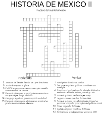

- Educaplay permite crear actividades educativas multimedia que se pueden integrar en plataformas de e-learning (como Moodle) o insertar en páginas web y blogs. Ofrece la posibilidad de desarrollar actividades con mapas, adivinanzas y diálogos, así como test, crucigramas, dictados, sopas de letras, ejercicios de ordenación de palabras y de completado. Para utilizar Educaplay solamente es necesario registrarse.
- Mentimeter. Herramienta que permite crear presentaciones para interactuar y hacer participar en tiempo real a una audiencia por medio de preguntas, encuestas y juegos. Los resultados pueden visualizarse como gráficos, nubes de palabras, etc.
- Socrative. Se trata de un sistema de respuesta inteligente con el que el profesor puede lanzar preguntas, quizzes, juegos, a los que los alumnos pueden responder en tiempo real desde sus dispositivos, ya que funciona desde un móvil, desde una tableta, desde un PC, un portátil.
- Kahoot!. Una herramienta que permite crear juegos de preguntas y respuestas de forma muy intuitiva. Pueden crear su propio quiz o seleccionar de los predefinidos.
- Puzzle.org. Crea puzzles interactivos de forma sencilla: crucigramas, sopa de letras, rompecabezas, pares, concurso de preguntas, entre otros juegos que se pueden compartir por medio de un enlace a ellos.
- Puzzlemaker. Es una herramienta que genera puzzles, sopas de letras, crucigramas, laberintos, mensajes escondidos y ejercicios similares. Es una aplicación gratuita, que no obliga previamente a registrarse como usuario. Permite imprimir los resultados o guardarlos como una imagen.
- Generador de puzzles para insertar en una web o blog a partir de imágenes propias y configurable.
- Crossword Puzzle Games. Generador de crucigramas imprimibles y de diferentes tamaños.

- Kubbu, generador gratuito de crucigramas, cuestionarios, ejercicios de emparejar (match) y de clasificar (divide). Los ejercicios creados se pueden trasladar al papel o trabajarse online. Se trata de un generador de actividades didácticas que permite el seguimiento de los resultados obtenidos por el alumnado (gratis hasta 30 alumnos) por lo que es ideal para el desarrollo de actividades destinadas a cursos virtuales.
- edHelper.com. Web donde se pueden crear diversos tipos de crucigramas, sudokus, problemas de lógica y matemáticas, así como un tablero para desarrollar juegos de vocabulario. Requiere registrarse.
- Plantillas de juegos interactivos. Juegos de ruleta, videojuegos, dados, domino, etc., editables para aplicar en exposiciones o explicaciones.